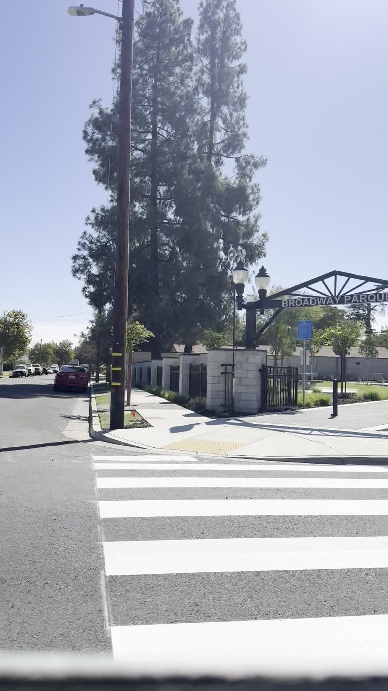
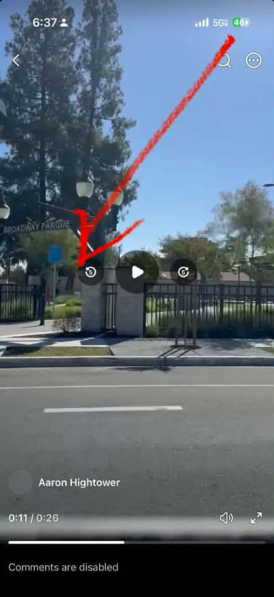
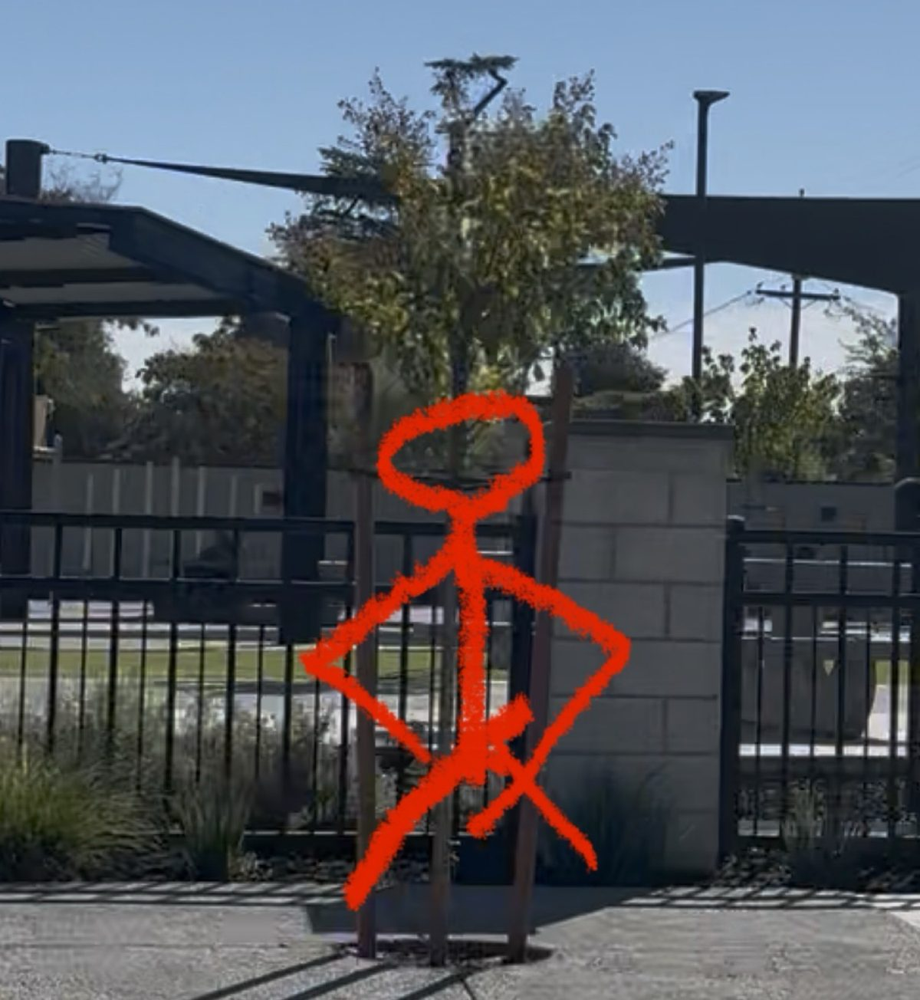
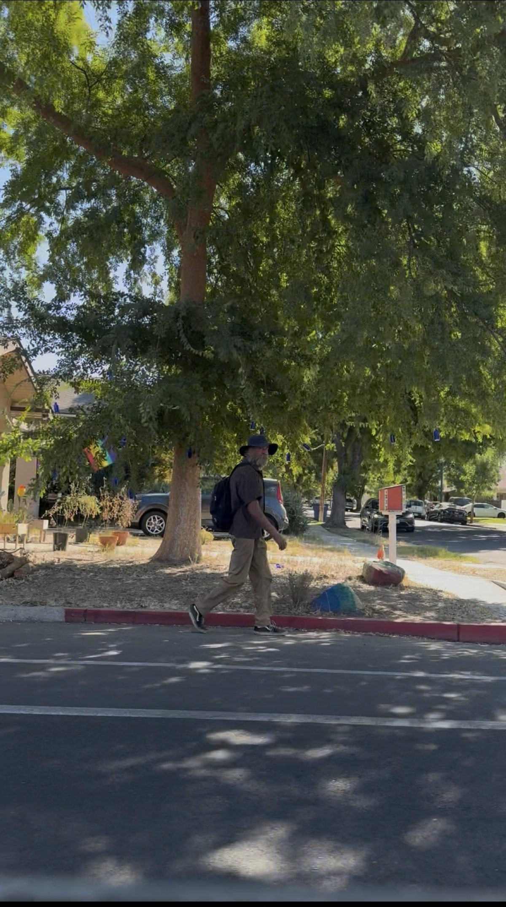
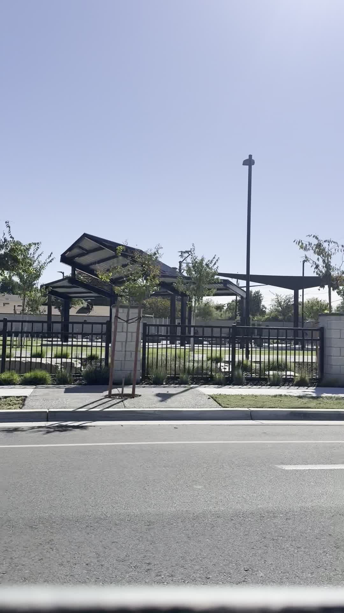
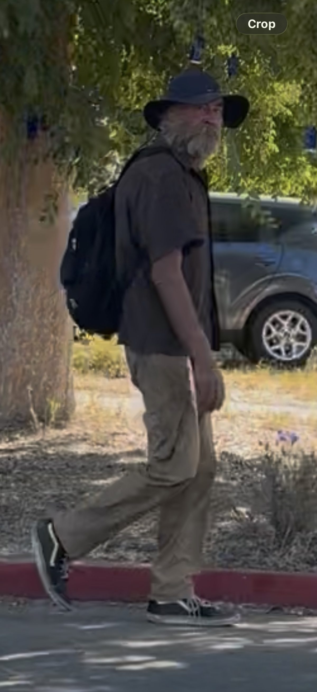

I was driving northbound on Broadway at 10:15 on a Sunday, on the way to speak in a Dollar Tree parking lot, when I saw it. A grown man at the new Broadway Parque gate. Facing the street. Holding himself in his hand. Urinating on the tree at the fence.
I understand when a man has to pee badly. That is not the issue. The issue is there is no excuse for doing it there, like that, at that hour, in front of a park the city just spent public money to build as a safe place for children.

Broadway Parque opened July 31, 2025 on the old police substation lot. City pages list a playground, an accessible swing, shade over the play structure, fencing, and a gate. Neighbors fought years for that corner. Measure P and the General Fund put about three million dollars into it. The point of the place is children and families. That is not my opinion. That is why the park exists.
One frame from the drive-by video shows a small figure inside the park that could possibly be a child. That frame is the only visual evidence I have that a child may have been on the grounds at that minute. I will not pretend I proved a child was standing there. I also will not pretend the park is something other than a children's park. The gate does not stop being a children's gate because the camera only caught a maybe.

The second picture marks the tree. He was facing the street and urinating on it. Not tucked behind a wall. Not in an alley. At the public gate.

After that he walked south on the east side of Broadway, less than half a block from the first intersection south of the park. Hat. Backpack. Same man. Same morning.

That walk is not the sermon. The sermon is what the act means. A man who cannot keep his own body covered at a children's park gate is not a free man. He is answering to whatever is driving him in that moment. Urgency. Habit. Addiction. Shame that has stopped caring. The chain can have different names. It is still a chain.
John 8:34-36
I tell you the truth, everyone who sins is a slave of sin. A slave is not a permanent member of the family, but a son is part of the family forever. So if the Son sets you free, you are truly free.
Truly free is not the right to use a playground gate as a toilet. Truly free is the power to stop. Jesus was not talking about civil liberty. He was talking about the thing that owns you when you stop owning yourself.
Romans 6:16-18
Don’t you realize that you become the slave of whatever you choose to obey? You can be a slave to sin, which leads to death, or you can choose to obey God, which leads to righteous living. Thank God! Once you were slaves of sin, but now you wholeheartedly obey this teaching we have given you. Now you are free from your slavery to sin, and you have become slaves to righteous living.
You choose. Every time a man drops himself in the street instead of finding a restroom or stepping out of sight, he is choosing a master. Romans does not leave a third option that still calls itself freedom.
Romans 6:19
Because of the weakness of your human nature, I am using the illustration of slavery to help you understand all this. Previously, you let yourselves be slaves to impurity and lawlessness, which led ever deeper into sin. Now you must give yourselves to be slaves to righteous living so that you will become holy.
Impurity is not a private mood. It leaks onto the sidewalk. It trains a neighborhood to treat darkness as weather. Weather you cannot change. Behavior you can.
1 Corinthians 6:18-20
Run from sexual sin! No other sin so clearly affects the body as this one does. For sexual immorality is a sin against your own body. Don’t you realize that your body is the temple of the Holy Spirit, who lives in you and was given to you by God? You do not belong to yourself, for God bought you with a high price. So you must honor God with your body.
Honor. That word is the opposite of what happened at the gate. The body is not a suggestion box. If the Holy Spirit lives in a man, the street in front of a swing set is not his urinal.
1 Thessalonians 4:3-5
God’s will is for you to be holy, so stay away from all sexual sin. Then each of you will control his own body and live in holiness and honor, not in lustful passion like the pagans who do not know God and his ways.
Control his own body. That is the minimum. Not heroism. Minimum. If you cannot do that on a Sunday morning at a park built for children, you are not living in the freedom Christ paid for. You are living in the old list.
Galatians 5:19-21
When you follow the desires of your sinful nature, the results are very clear: sexual immorality, impurity, lustful pleasures, idolatry, sorcery, hostility, quarreling, jealousy, outbursts of anger, selfish ambition, dissension, division, envy, drunkenness, wild parties, and other sins like these. Let me tell you again, as I have before, that anyone living that sort of life will not inherit the Kingdom of God.
Galatians also tells us what the other side of the coin is. Freedom is real. Freedom has a use.
Galatians 5:1
So Christ has truly set us free. Now make sure that you stay free, and don’t get tied up again in slavery to the law.
Galatians 5:13
For you have been called to live in freedom, my brothers and sisters. But don’t use your freedom to satisfy your sinful nature. Instead, use your freedom to serve one another in love.
Stay free. Do not use the gift as a permit. Use it to serve. Serving this District looks like a man who can hold himself together in public because he belongs to Someone else now. Serving this District also looks like neighbors who refuse to call the gate a bathroom just because the man is poor, old, sick, or tired. Compassion that erases the standard is not compassion. It is surrender.

Jesus did not treat little ones as decoration.
Matthew 18:6
But if you cause one of these little ones who trusts in me to fall into sin, it would be better for you to have a large millstone tied around your neck and be drowned in the depths of the sea.
A child does not need a theology class to know that a grown man standing like that at the park gate is wrong. The child just absorbs it. That is how a street gets trained. I will not claim I proved a child was watching at 10:15. I will claim this: we built a park so children could be there. The standard is for the place we built, not only for the minutes we can prove a child was standing in the frame.
Ephesians 5:3
Let there be no sexual immorality, impurity, or greed among you. Such sins have no place among God’s people.
Ephesians 5:11-12
Take no part in the worthless deeds of evil and darkness; instead, expose them. It is shameful even to talk about the things that ungodly people do in secret.
This was not secret. It was Sunday, northbound, at the gate. Exposing it is not cruelty. Pretending it is just the city is participation. We do not have to hate the man. We also do not have to lie. A man in that condition may need help. Help does not start by calling the behavior acceptable. Help starts by telling the truth. This is impurity. It is public. It harms the people who have to see it. It keeps the man himself locked inside a life that cannot serve the Lord.
Romans 13:13-14
Because we belong to the day, we must live decent lives for all to see. Don’t participate in the darkness of wild parties and drunkenness, or in sexual promiscuity and immoral living, or in quarreling and jealousy. Instead, clothe yourself with the presence of the Lord Jesus Christ. And don’t let yourself think about ways to indulge your evil desires.
Decent lives for all to see. That is the test. Not what you do when nobody is looking. What you do when Broadway is looking, and the park that cost three million public dollars is looking, and any child who might walk through that gate is looking.

Philippians 4:8
And now, dear brothers and sisters, one final thing. Fix your thoughts on what is true, and honorable, and right, and pure, and lovely, and admirable. Think about things that are excellent and worthy of praise.
A neighborhood that only talks about what is broken will stay broken. A neighborhood that also talks about honor, control of the body, and service to the Lord has a chance to become something else. Broadway Parque was supposed to be that kind of place. Swings. Shade. A gate that means children can come. If we shrug at a man using that gate as a toilet, we are teaching the next child that the new park is already old in the worst way.
I am not standing in this word to hate a man I do not know. I am standing in it because I refuse to let this District treat public indecency as weather. The same Lord who sets a slave free also tells him to stay free. That means a restroom instead of the playground tree. That means covering what should be covered. That means remembering why that corner was fought for in the first place.
If you are that man, or you have been that man, the door is the same one it has always been. The Son still sets people free. Truly free. Not free to stay in the same ditch. Free to leave it. Free to control your own body. Free to live in holiness and honor. Free to serve instead of being dragged around by whatever is in your hand at 10:15 on a Sunday.
That is the kernel. What I saw at the Parque gate is what slavery looks like when it stops hiding. What Christ offers is the opposite. Stay free. Do not go back under the yoke. Use the freedom to serve the Lord and to keep this place from becoming a school for the next generation in things that should never be taught at a children's gate.
Sources
- City of Fresno, Broadway Parque page. Address 940 N Broadway Street. Playground, accessible swing, shade, fencing, gate. Grand opening July 31, 2025. About $3 million from the General Fund and Measure P.
- ABC30 and YourCentralValley coverage of the July 31, 2025 opening. Tower District's first park on the old Central police substation lot at Broadway and Elizabeth.
- Photographs and video stills by Aaron Hightower, Sunday morning, September 6, 2026, from N Broadway Street. The marked still is the only visual evidence offered here that a child may have been on the grounds at that minute.
- Scripture quotations are from the New Living Translation.